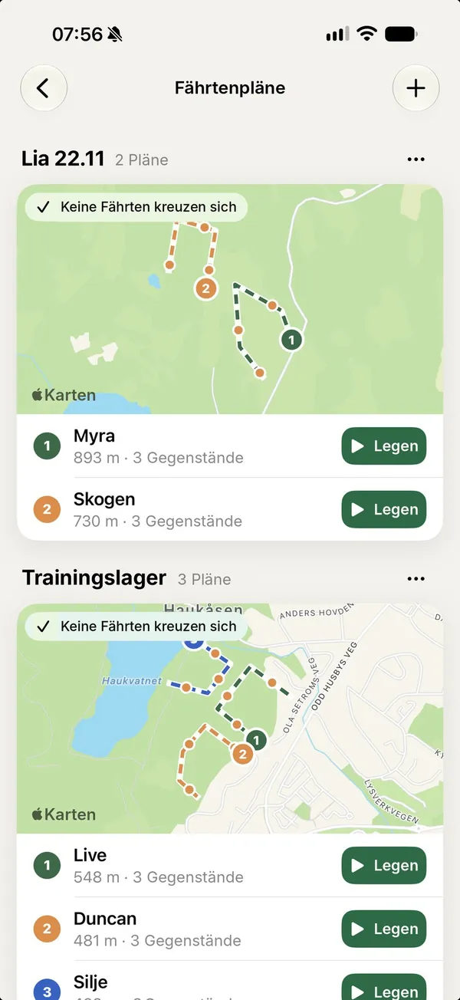

Neu in Trax
Die Updates sind für alle, die die App haben, kostenlos.
Version 2.6: Fährtenpläne
November 2026 · iPhone
Plane deine Fährten zu Hause auf der Karte und lege sie draußen im Gelände nach Plan.
- Fährte auf der Karte zeichnenTippe Schenkel und Gegenstände ein und sieh die Länge jedes Schenkels und der ganzen Fährte.
- Gruppen für den TrainingstagFasse die Fährten für denselben Tag und dasselbe Gelände auf einer Karte zusammen und sieh sofort, ob sich welche kreuzen oder zu nah liegen.
- Fährte nach Plan legenDer Plan wird gestrichelt auf der Karte gezeigt, während du die Fährte legst, mit den anderen Fährten der Gruppe blass daneben.
- Mit dem Fährtenleger teilenSchick den Plan an den, der die Fährte legt, und er landet direkt in Trax. Oder teile ihn als GPX.


Version 2.5: Neue Fährtendetails und die Hundeseite
Oktober 2026 · iPhone und Android
Neue Fährtendetails und eine eigene Seite für jeden Hund.
- Neue FährtendetailsGroße Karte oben mit Wiedergabe und Reiter für Übersicht, Abweichung, Gegenstände und Bedingungen. Eine neue Grafik zeigt die Abweichung entlang der Fährte.
- Die HundeseiteTippe auf die Pfote auf dem Startbildschirm und sieh Kennzahlen, Ziele, Trainingselemente und die Entwicklung für jeden Hund.
- „Kreuzt hier“ bei IGP-FährtenTippe dort, wo die Verleitungsfährte kreuzen soll. Die Kreuzung zählt für die IGP-Vorgabe und löst einen Hinweis aus, wenn der Hund vorbeiarbeitet.
- Verweisen bei der SucheLiegen, Sitzen, Stehen, Aufnehmen oder Vorbei bei der Gegenstandssuche, und passives Verweisen, Bringseln oder Verbellen bei der Flächensuche.
- Funde nachträglich korrigierenTippe auf einen Gegenstand einer gespeicherten Fährte und wähle Gefunden oder Nicht gefunden.
- Ortsnamen und MaßstabFährten ohne eigenen Namen erhalten Ortsnamen und Datum, und die Karten haben einen Maßstab.
Wartende Fährten sehen jetzt genauso aus wie fertige, du drehst die IGP-Vorlage und formst das Suchfeld mit einem Tipp und Ziehen, und die IGP-Vorgabe für FH 2 und FH 3 zählt Kreuzungen jetzt richtig. „Fährte importieren“ und die Anleitung sind jetzt in den Einstellungen.